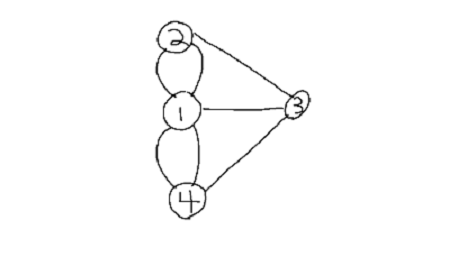
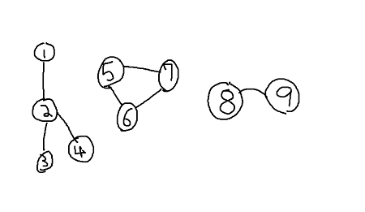
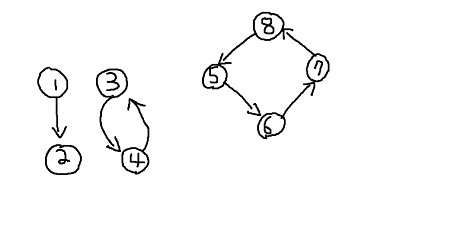

Minimal Spanning Tree:
date posted: 2020-02-02
Graph Theory
History alert! Graph data structure originated from graph theory which is branch of Mathematics. Leonhard Euler, one of great mathematician had published a paper in 1736 about Seven bridges of Konigsberg which is considered first paper of graph theory. Around that time seven bridge of Konigsberg was a notable problem in Mathematics, where the goal of the problem was to find a path that allow you to cross all bridges once and only once.
Below picture shows actual map of city of Konigsberg in Prussia, now Kaliningrad, Russia.

In Leonhard Euler's paper he had proved with mathematic rigor that it was not possible to cross each bridge once and only once.
This is the beginning of graph theory and stepping stone for other branch of mathematics such as Topology.
Graph data structure
Graph data structure consists of two elements called vertex and edge. Two main type of graphs, which are undirected graphs where edges have no direction and directed graph where edges have a direction.
Using map of Konigsberg, bridges are considered edges and each land is considered a vertex and since you can cross each bridges in either direction this is an example of undirected graphs.
map of Konigsberg would look like picture below if it is converted to vertices and edges.
Using the picture above lets go over basic terminologies:
- Degree: number of edges connected to a vertex. So vertex 1 would have degree 4 and all other vertices will have degree 3. However in directed graphs there are two degree one going out called out-degree and coming in called in-degree.
- Path: When going from vertex 1 to vertex 3, there are many different ways and each of them are called paths. You could go 1 -> 3 or 1 ->2 ->3 or 1 -> 4 -> 3. They are all paths.
- Simple Path: path that crosses least edge, in our case 1 -> 3.
- Cycle: when start vertex and end vertex are the same it creates a cycle. So 1 -> 4 -> 1 is a cycle. Simple cycle is when there are no overlapping vertex in a cycle.
- Acyclic graph: graph with no cycles. Our graph is undirected cyclic graph since edges have no directions and there are many cycles 1 -> 2 ->1, 1 ->4 -> 3 -> 2 -> 1 and more.
- Connected graph: A graph is said to be connected if any two vertex have path that connect them.
- Connected componenets: Subgraph where any two vertices are connected to eath other but not connected to additional vertices in whole graph. Lets look at the picture below to clarify our understanding. Graph below is Not connected since if you chose vertex 1, 9 they are not connected. From one whole graph there are 3 subgraphs that are connected, our first subgraph consisting of vertices 1,2,3,4 are connected since any two vertex you choose there exists a path between them. Same goes for subgraph 5,6,7 and 8,9. Graph is not connected however it has 3 connected components(subgraphs). 
- Strongly connected: In directed graph, if two vertex point to each other, it is called "strongly connected".
there are 3 subgraphs belows, 1 -> 2 is a connected graph however not strongly connected since 2 does not point to 1.
Second subgraph 3 -> 4, 4 -> 3 is a strongly connected graph since two vertex point to each other.
Lastly, 5 -> 6 -> 7 -> 8 is also strongly connected graph, why? because if you pick vertex 5 and 7, vertex 5 points to 7 by using 6, 5 -> 6 -> 7. Similarily 7 points to vertex 5 by using 8, 7 -> 8 -> 5 therefore any two vertex you choose they will point to each other with the help of other vertex (there exists path). - Strongly connected components: Similar to connected components, it is subgraphs that are strongly connected so in our case there exists two strongly connected components. 
- Complete graph: Any vertex can be reached by only crossing one edge, in other words all vertices are directly connected to each other.
- Forest: Acyclic undirected graphs
- Tree: connected Acyclic undirected graphs, or forest that is connected.
Starting from left, it is acyclic, undirected therefore satisfy condition to be a Forest. It is also connected thus it is both Forest and a Tree.
Second, It is Acyclic and undirected however it is not connected thus it is only a Forest.
Lastly, there exist a pentagon in the middle forming a cycle thus it does not satisfy either one.

Graph representation
Finally we are done with terminologies lets see how to represent graph data structures.
Adjacency listFor each vertex it has a list associated with it where elements represent vertex that it points to. In Python dictionary of lists are used to represent this, each key is a vertex and value is list of vertices that key(vertex) is pointing to (directly).
adj_list = {
1: [2, 4],
2: [5],
3: [6,5],
4: [2],
5: [4],
6: [6]
}
Code above represent below picture.
Looking at vertex 1, we can see there are two edges going out to vertex 2 and 4 thus adj_list[1] = [2,4]
In undirected graph since vertex 1 contains [2,4] vertex 2 and 4 will contain 1 thus adj_list[2] = [1,4,5] and adj_list[4] = [1, 2, 5]. Note that order of vertex do not matter, adj_list[4] = [2,1,5] is okay as well.
As graph becomes dense, number of edges increase approaching |E| = |V^2| using adjacency list becomes slow since it require twice more space for edges going back and forth. For example if vertex 1 is connected to all 2, 3, 4, 5, 6 then we require twice more space since we need to create list for 2 going to 1, 3 going to 1, and so on...

For weighted graph using adjacency list take up one extra place for storing weight of edges. If edge connecting A -> B has weight of 7, store it beside the vertex
{A: [[B,7], [C, weight]]}
Taking up extra space for weights.
Adjacency matrix
As graph become dense it is more efficient to use adjacency matrix.
Below matrix represents graph in above example. Vertical axis represents vertex and horizontal axis represents vertices that vertical axis' vertex points to.
Vertex 1 points to 2 and 4 thus in adjacency matrix adj_matrix[1][2] = 1 and adj_matrix[1][4] = 1. All other columns are set to 0 since vertex 1 do not point to them.
Looking at vertex 2, it only points to vertex 5 therefore adj_matrix[2][5] = 1 and all other are 0.
It is very straight forward and you can see that no matter it is directed or undirected graph its space complexity will always be V^2.
So for dense graphs adjacency matrix is more suitable and more sparse matrix using adjacency list would be suitable.

For weighted graphs replace 1 with appropriate weights